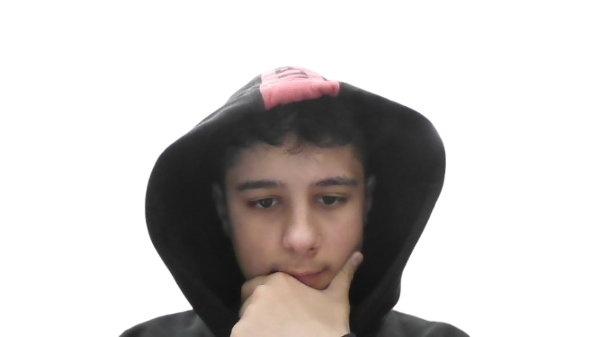

Hei, jeg heter Hasan
og forskjellige sport
Ting jeg liker
Jeg liker masse forskjellige ting, men noen av dem er:
- forskjellige spill som minecraft, the forest og mere.
- jeg også liker pcer.
Min favoritt-mat
Jeg liker best å spise, det aller beste øverst:
- Jeg Liker mange forskjellige arabiske mat og mat som Pizza, Hamburger, nudler, og mere!
Hasan >
